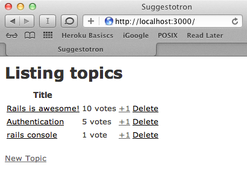

Goal
To teach you Ruby on Rails we are going to use a "Real World" example. You've decided to create a voting system for you and your friends to play with. You've decided at a minimum, you'd like to allow users to:
- view the topics sorted by number of votes
- vote on topics
- create, edit, and destroy topics
You've sketched up an initial screenshot of what you want it to look like:

Meta-Goal
When you have completed today's goal of getting the basic application online you should understand:
- Basic Ruby syntax
- How to try your Ruby code (irb)
- How to go from requirements to a new working Rails application
- How to get your application online
- The basic tools a RoR developer uses (source control, editor, console, local server)
Requirements
To get through this course, you'll need a free Github account.
Create a free Github account by filling the signup form.

On the next screen, you can click "skip personalization" on the bottom to continue.
Once you are signed into Github, you'll need to create a repository - a new programming project.
To do that,
Create a new repository from the Railsbridge template.
You can pick any name you like, or accept the default suggestion. You can also decide if you want your code to be public
for anyone to see, or private.
Leave the "Include all branches" option unchecked, then click Create repository.

It may take a moment for your repository to be generated.

When it's finished, you'll be taken to a page that looks like this. Click on the green Code button,
then click Create codespace on main. This will be our code editor.
This will begin setting up the editor in your browser. It may take a minute or two.

The editor will automatically set up like this once it's ready.
Congratulations! You're ready to start coding.
Working Effectively and Efficiently
We highly recommend you do the following:
- In your codespace you will want to open 2 terminal tabs:
- One is for regular terminal stuff
- One will be for the Rails console. We'll explain later.
- Click the "+" icon highlighted here:

- This will create a new terminal tab, and open a panel where you can switch between them:
- Open your browser fresh or hide any windows you already have open.
- Bring up one window with two tabs.
- One for this content.
- One for interacting with your app.
- Hide all extra applications. Turn off Twitter, IM, and all other distractions.
By minimizing the number of things you interact with, you reduce the amount of time spent switching between them and the context lost as you work through the lessons. Having 50 tabs open in your web browser gets confusing and wastes time.
Format
Each lesson will look like this:
Step Title
Goal:
Description of the current step.
Steps:
steps to take.
def code_to_write 1 + 1 end
Explanation
Details of what the steps actually did... spell out the cause and effect.